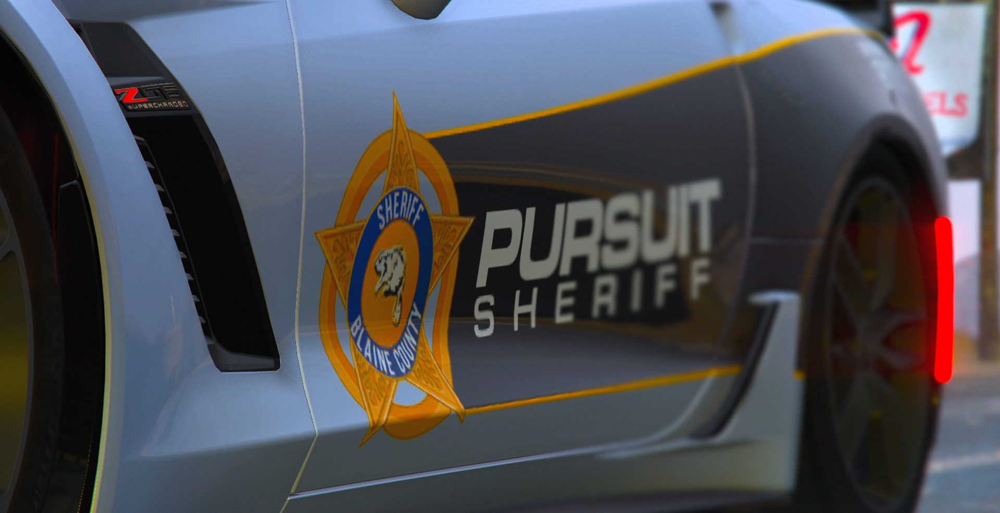

PATROL DIVISION
The Patrol Division is the backbone of any law enforcement agency, serving as the first line of defense in maintaining public safety and enforcing laws. This division is tasked with providing a visible presence in the community, responding to emergency calls, and addressing a wide range of incidents, from minor disturbances to serious crimes.
High-Speed Unit
The High-Speed Unit (HSU) is a specialized division within the Los Santos Sheriff's Department (LSSD), established to address situations that demand precision driving, rapid response, and expert vehicle handling. The unit focuses on scenarios involving high-speed pursuits, highway patrols, and intercepting suspects engaged in dangerous activities that pose a threat to public safety.

Introduction to the Special Weapons and Tactics
The Special Weapons and Tactics (SWAT) unit is an elite division within the Los Santos Sheriff's Department (LSSD), specializing in high-risk operations that go beyond the scope of regular law enforcement capabilities. SWAT is tasked with responding to critical incidents where tactical precision, advanced weaponry, and specialized training are required to neutralize threats and protect the community.
Marine Unit
The Marine Unit of the Los Santos Sheriff's Department (LSSD) is a specialized division responsible for law enforcement and public safety on and around waterways, harbors, and coastal regions. This unit plays a crucial role in ensuring security across the vast maritime environment of Los Santos, addressing crimes, conducting search and rescue operations, and protecting natural resources.


Air Support Division
The Air Support Division (ASD) of the Los Santos Sheriff's Department (LSSD) is a highly specialized branch responsible for providing aerial assistance in law enforcement operations. The division plays a critical role in supporting ground units, enhancing surveillance capabilities, and providing real-time intelligence during high-speed chases, search and rescue missions, and other complex situations. The Air Support Division's ability to monitor large areas from above significantly improves response times and operational effectiveness.